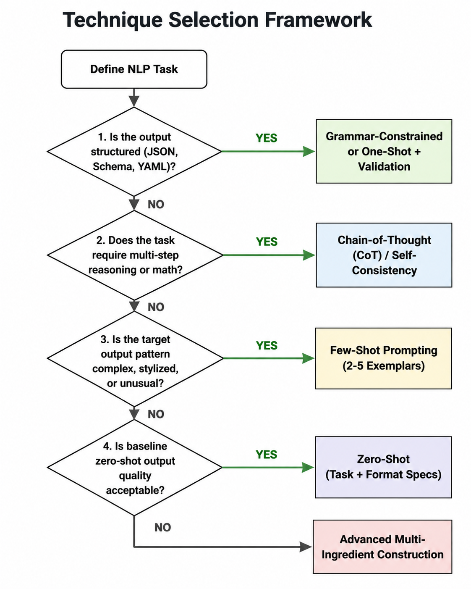

Remark
These lecture notes are in early access and will continue to evolve based on classroom experience and feedback.
6.3.6. Prompt Engineering in Practice#
6.3.6.1. Learning objectives#
By the end of this section, you should be able to:
Use a principled decision framework to select the appropriate prompting technique for a given task.
Apply prompt engineering techniques to a diverse set of NLP tasks: classification, extraction, summarization, and generation.
Iterate systematically on a prompt — identify the failure mode, select the appropriate fix, and re-evaluate.
Describe the prompting technique selection guide and explain the criteria that drive each decision.
6.3.6.2. The Technique Selection Framework#
After covering six core prompting strategies—basic prompting, advanced multi-ingredient prompt construction, zero-shot ICL, few-shot ICL, Chain-of-Thought, and grammar-constrained generation—the primary production challenge becomes tactical selection. Applying an overly complex technique introduces unnecessary latency and token costs, while under-engineering a prompt causes execution instability.
The following structured decision framework guides your selection path:
{kind=link}

Fig. 6.2 The Prompt Technique Selection Framework: A structured four-step decision path to determine the optimal prompting strategy based on output structure, reasoning complexity, stylistic requirements, and zero-shot baseline performance.#
6.3.6.2.1. Strategic Deconstruction of the Framework#
Structural Enforcement Layer: Always isolate structural requirements first. If your output interfaces directly with downstream code, syntactic failures ruin reliability. Address formatting boundaries before trying to optimize semantic quality.
Cognitive Complexity Assessment: If a task requires transforming information across several intermediate logical states, forcing the model to generate a direct conclusion causes next-token prediction failure. Activate a reasoning scratchpad immediately.
Data Density vs. Context Costs: Moving down the framework scales your token footprint. Zero-shot is the fastest and cheapest option (\(1\times\) processing pass), whereas Few-Shot and Tree-of-Thought scale context window costs and latency significantly.
6.3.6.3. Applied Examples#
To see the framework in action, we will evaluate a series of classic NLP tasks using the Phi-3-Mini pipeline loaded below:
Device set to use cuda
6.3.6.4. Task 1: Sentiment Classification#
Framework Analysis: * Is the output a complex structured schema? No (it’s a simple, single-word string label).
Does it require multi-step math or logic? No.
Is the target pattern highly unusual? No, sentiment labels are standard commodities.
Therefore, we select Zero-Shot with Advanced Format Specifications.
6.3.6.4.1. The Naive Failure Mode: Extra Conversational Prose#
When prompted naively, instruction-tuned models regularly suffer from conversational spillover, wrapping the requested token inside pleasantries.
Naive Output:
This review is mixed, as it contains both a negative aspect (the shipping delay) and a positive aspect (the device's performance).
6.3.6.4.2. The Precision Engineering Fix: Token-Locked Constraints#
To eliminate conversational prose and guarantee a single-token classification label without the overhead of a few-shot exemplar pattern, anchor the constraints using explicit role definition and strict boundaries.
Engineered Output:
NEGATIVE
6.3.6.4.3. Engineering Breakdown#
By combining a strict system persona (“data classification API”) with Greedy Decoding (do_sample=False), we maximize token-level compliance. The final string placeholder (Label:) acts as a precise generation trigger in the recency position, clearing out conversational text pathways entirely.
6.3.6.5. Task 2: Named Entity Extraction#
Framework Analysis:
Is the output structured? Yes (JSON object).
Does it require complex, multi-step math or logic? No.
Is the target schema complex or custom? Yes, it maps textual sentences into dedicated arrays (
people,organizations,locations).
Therefore, according to our selection framework, we implement One-Shot Prompting combined with an Explicit Schema Structural Envelope.
{"people": ["Elon Musk"], "organizations": ["Tesla"], "locations": ["Austin", "Texas"]}
6.3.6.5.1. Engineering Breakdown#
Schema Locking: By supplying the empty
schema_examplein thesystemprompt, the network allocates strong baseline attention weights to the target JSON keys before processing the variable data.Structural Anchor: The
Input/Outputexemplar pair defines the formatting boundary. The model learns exactly how to enclose the extracted strings inside valid JSON array lists without introducing trailing commas or missing escape sequences.
6.3.6.6. Task 3: Multi-Step Math#
Framework Analysis:
Is the output a complex structured schema? No (it’s a simple, short calculation text response).
Does it require multi-step reasoning, arithmetic logic, or planning? Yes.
Therefore, the framework dictates upgrading to a Chain-of-Thought (CoT) reasoning pattern.
Step 1: Start with the initial number of apples.
The cafeteria initially has 23 apples.
Step 2: Subtract the number of apples used to make lunch.
The cafeteria uses 20 apples for lunch. So, 23 - 20 = 3 apples left.
Step 3: Add the number of apples bought.
The cafeteria buys 6 more apples. So, 3 + 6 = 9 apples.
The cafeteria has 9 apples left after making lunch and buying more apples.
6.3.6.6.1. Engineering Breakdown#
The Scratchpad Effect: Forcing the model to output intermediate mathematical states sequentially prevents the network from committing to a premature (and often statistically incorrect) token guess.
Self-Reference Tracking: Each step generated by the autoregressive engine is appended back to its active context window, allowing subsequent self-attention layers to perform clean mathematical transformations on accurate intermediate integers.
6.3.6.7. Task 4: Long-Form Content Generation#
Framework Analysis:
Is the output structured? No (it’s free-form Markdown text).
Does it require multi-step planning or have dependent outputs? Yes. Generating a full technical blog post directly from a raw topic often leads to unstructured, superficial text or causes the model to run out of generation tokens mid-sentence.
Therefore, the framework dictates using Chain Prompting to separate macro-planning (the outline) from micro-execution (the body copy).
### Section 1: Understanding In-Context Learning in Small Language Models
In-context Learning (ICL) is a relatively new paradigm in the realm of machine learning, specifically within the field of natural language processing (NLP). Small language models, also known as micro-models or mini-models, are designed to have fewer parameters compared to their larger counterparts. Despite their compact size, these models can still perform remarkably well on a variety of NLP tasks, particularly when using In-context Learning.
At its core, In-context Learning enables a small language model to understand and perform tasks based on examples provided directly within the input text, without requiring external data or sophisticated pre-training. This approach takes inspiration from the human ability to learn from context, where learning can be facilitated by examining a few relevant examples. For instance, if we want to teach a small model to identify spam emails, we can provide it with several examples of spam and non-spam emails. By analyzing these examples, the model learns to discern patterns and characteristics that distinguish spam from legitimate correspondence.
In-context Learning has proven to be especially beneficial for small language models due to their limited capacity. Traditional pre-training methods, which involve training on vast text corpora, are often impractical for micro-models in terms of memory and computational resources. Instead, ICL allows these compact models to leverage their few parameters and learn effectively from a small amount of data in an efficient manner.
### Section 2: Advantages of In-Context Learning for Small Language Models
One of the primary advantages of In-context Learning for small language models is its efficiency in terms of data and computational resources. Since ICL does not require the extensive pre-training typically associated with larger language models, it significantly reduces the amount of data and computational power needed. This efficiency makes it an attractive option for deploying small language models in resource-constrained environments, such as mobile devices or edge computing platforms.
Another advantage of In-context Learning is its ability to adapt to specific tasks without the need for task-specific fine-tuning. Small language models can be fine-tuned on a few examples of a particular task, allowing them to generalize their knowledge to other similar tasks without additional training. For example, a small language model trained on a few examples of sentiment analysis can apply the knowledge gained to perform sentiment analysis on new, unseen text data.
Furthermore, In-context Learning enables small language models to benefit from transfer learning, where knowledge learned from one task can be transferred to another. This transfer learning capability allows micro-models to achieve high performance on a wide range of NLP tasks without requiring extensive pre-training on each task individually.
### Section 3: Challenges and Limitations of In-Context Learning in Small Language Models
Despite its numerous advantages, In-context Learning also presents several challenges and limitations that need to be addressed. One major challenge is the difficulty in choosing the right examples to provide to the model. If the examples are not representative of the task, the model may learn incorrect patterns and produce inaccurate results. This issue is particularly relevant for small language models, as their limited capacity makes them more susceptible to learning from biased or misleading examples.
Another challenge with In-context Learning is the trade-off between model capacity and task complexity. Small language models have limited capacity, meaning they can only learn from a small number of examples. When dealing with complex tasks that require a deep understanding of various concepts, providing sufficient examples for the model to learn from can be challenging. In such cases, small models may struggle to perform well and may require additional techniques,
6.3.6.8. Prompt Iteration Workflow#
When an engineered prompt fails to deliver predictable production results, avoid random adjustments. Apply this systematic diagnostic loop to fix failures with minimal code perturbation:
[Observe Failure] ──► Identify the exact bug type (Prose, Drift, Logic)
│
[Hypothesize Cause] ──► Map bug to a missing prompt ingredient
│
[Apply Minimal Fix] ──► Inject targeted modification (e.g., add delimiter)
│
[Evaluate on Batch] ──► Test stability across ≥ 10 diverse test inputs
│
[Commit to Artifact] ──► Version-control the frozen template structure
OBSERVE the failure: Pinpoint the exact bug profile:
Wrong format \(\rightarrow\) Enforce structural format schemas or upgrade to grammar rules.
Off-topic / Drift \(\rightarrow\) Inject explicit background context and boundary constraints.
Hallucinations \(\rightarrow\) Add strong grounding rules and citation mandates.
Inconsistent formatting \(\rightarrow\) Upgrade from zero-shot to one-shot/few-shot exemplars.
Reasoning/Logic error \(\rightarrow\) Trigger a Chain-of-Thought scratchpad or add worked examples.
HYPOTHESIZE the cause: Which core ingredient is missing, hidden in a low-attention position, or mathematically ambiguous to the network?
FIX with a minimal change: Add only the targeted constraint required to block the failure path. Avoid bloat; over-engineered prompts dilute the model’s self-attention layers.
EVALUATE on multiple inputs: Never declare success based on a single passing run. Validate your updated prompt against at least 10 diverse test scenarios.
DOCUMENT what worked: Treat production prompts like true software source code. Check them into version control and lock down generation parameters like temperature and top_p alongside the template text.
6.3.6.9. Prompting Technique Summary#
Technique |
When to Use |
Key Implementation Strategy |
|---|---|---|
Zero-Shot [Brown et al., 2020] |
Standard commodity tasks, high-level text translations, simple free-text formats. |
Pack clean task instructions and direct format limits inside the user message. |
One-Shot [Brown et al., 2020] |
Rigid schemas, custom key mappings, structural data extractions. |
Include exactly one full input-to-output template to lock in vocabulary expectations. |
Few-Shot [Brown et al., 2020] |
Multi-class text classification, unique stylistic tones, handling complex edge cases. |
Curate 3–5 high-quality examples; place your most representative exemplar last. |
Chain-of-Thought [Wei et al., 2022] |
Math calculations, multi-step logical planning, algorithmic or code reasoning. |
Append zero-shot triggers like “Let’s think step by step” [Kojima et al., 2022] or pass a fully worked few-shot reasoning trace. |
Self-Consistency [Wang et al., 2023] |
High-reliability calculations where a single reasoning slip breaks the application. |
Sample multiple CoT paths at an elevated temperature (\(T \approx 0.7\)), then aggregate outputs via a majority vote. |
Tree-of-Thought [Yao et al., 2023] |
Combinatorial problems, open-ended business planning, multi-path exploration tasks. |
Orchestrate a multi-prompt pipeline that generates discrete steps, scores their validity, and executes backtracking. |
Chain Prompting [Wu et al., 2022] |
Long-form generation, compound transformations, workflows with distinct processing milestones. |
Break monolithic tasks into sequential API requests where Step \(N\)’s text output is cleanly fed into Step \(N + 1\). |
Grammar-Constrained [Geng et al., 2023] |
Strict syntax enforcement, native database integrations, mission-critical structured outputs. |
Intercept logits directly at runtime using a formal BNF grammar specification tied to an engine like |
6.3.6.10. Exercises and discussion#
Framework application Choose five tasks from different domains: (a) tweet sentiment classification, (b) medical entity extraction, (c) multi-hop question answering, (d) code generation, and (e) product description writing. For each, apply the decision framework step-by-step and justify the technique you selected before implementing and testing it.
Iterative improvement case study Take a prompt that produces mediocre output and iterate through five improvements, documenting each change and its effect on output quality. Use the diagnostic workflow above to guide each iteration. What is the cumulative improvement from the initial prompt to the final version?
Prompting vs. fine-tuning For what types of tasks does prompt engineering reach its ceiling — where no amount of prompting improvement will produce acceptable output quality? List three such tasks and explain what property makes them resistant to prompting. For each, what fine-tuning approach would you consider instead?